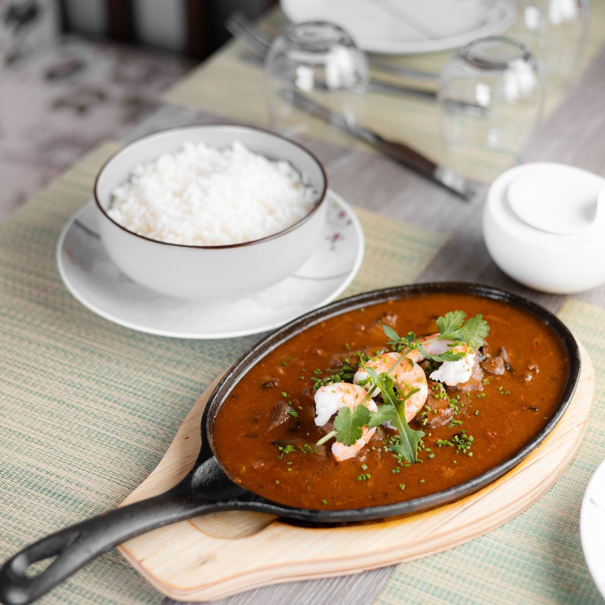

Menu at Pirate's Cove
A Gulf Coast po-boy restaurant in Pass Christian, serving the Coast since 1972.
Gallery



All gallery photos are stock photos, labeled as such. They show po-boy style sandwiches and Gulf dishes, not this restaurant's plates.
Contact
Pirate's Cove serves Pass Christian, MS. Questions? Call (228) 452-4741.